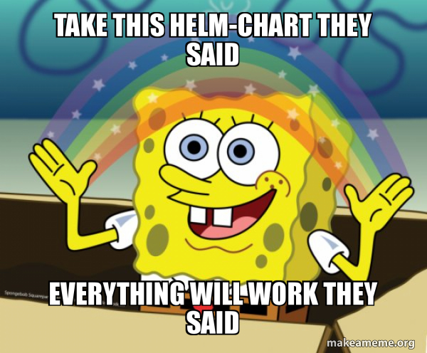

This article is part of a series about installing and configuring a Mastodon instance on a cluster of Raspberry Pi computers running k3s. To go back to previous articles in the series, try any of the links below:
- Introduction
- Part I: My home network topology
- Part II: The Mastodon Helm chart (this post)
- Part III: Configuring and installing prerequisites
- Part IV: The waking nightmare that is Let’s Encrypt
- Part V: Actually installing Mastodon
- Conclusions
I don’t know about you, dear reader, but when I first started this journey into teaching myself kubernetes, I was elated at the prospect of Helm: a “package manager for kubernetes”, it said! Thank the cloudless heavens; I was getting so bogged down with managing separate yaml files, I was thrilled at the prospect of someone just setting some reasonable defaults and packaging it all together.

Introducing the Mastodon chart
You can find the latest version of the Mastodon chart here.
I should mention: when I started working on this in early December, the chart was actually still part of the main Mastodon repo! This meant that changes were much slower to be merged, and as a result I had to implement some workarounds that have since been fixed in the newest chart. Even so, I’ll point out 1) any changes I made, 2) whether those changes still need to be made now, and 3) relevant PRs.
The chart repo’s README linked above provides pretty good instructions for getting up and running. Or, in my case, to get some initial error messages that pointed me where I needed to go next.
At the bare minimum, everyone has to fill in:
- the whole
mastodon.secretssection (four keys) - the
postgresandredissections (whether or not they’re enabled in the chart) - the
mastodon.stmpsection for the mailer’s SMTP settings (not technically required, but nobody will be able to register with your instance or reset their passwords without them)
Because of my circumstances, I also had to modify the elasticsearch section (that’s another bitnami image that wasn’t ARM-compatible, like redis and postgres; but I’m leaving all three of these for the next post!), the ingress section (because I was running traefik instead of the default nginx), and the mastodon.persistence section (because I was using a local NAS for storage–I know, not recommended for production, but for a two-user instance? no problem).
So with that lengthy introduction and background out of the way, the salient points here and the primary guiding principles in diving into the chart are:
- Disabling the dependencies (elasticsearch, redis, postgres) so I could install them myself later (next post!)
- Adding NAS storage as the primary storage mechanism (I was using nfs subdir external provisioner)
- Configuring ingress to work with traefik instead of nginx
The “easy” stuff: storage and ingress
Probably the easiest modification to make was the storage. Under mastodon.persistence, there are two main groups: assets and system. They both have their own persistent volumes in case you need to dramatically alter their respective configurations, but I went with the default, adding only one line to each subsection (since storageClassName wasn’t even listed in the default chart, but has templates in the backend that will handle the key-values if provided):
persistence:
assets:
# -- ReadWriteOnce is more widely supported than ReadWriteMany, but limits
# scalability, since it requires the Rails and Sidekiq pods to run on the
# same node.
accessMode: ReadWriteOnce
storageClassName: my-nfs-storage-class ### ADDED THIS LINE
resources:
requests:
storage: 10Gi
system:
accessMode: ReadWriteOnce
storageClassName: my-nfs-storage-class ### ADDED THIS LINE
resources:
requests:
storage: 100GiThat’s it! Mischief managed.
For ingress, things were a little more complicated. Not because it required more configuration in the chart itself, but because it required more configuration ahead of using the chart at all. The ingress configuration in the Mastodon chart itself masks the hours spent getting traefik set up exactly the way I wanted. Sadly, this is beyond the scope of the Mastodon instance setup (it will definitely appear in a blog post about just getting my k3s cluster off the ground!), but I will discuss configuring the TLS support / SSL certificates in a later post in this series, so stay tuned.
Here was my configuration (changes from the current default are marked, and comments are deleted for brevity):
ingress:
enabled: true
annotations:
cert-manager.io/cluster-issuer: "letsencrypt-prod-dns" ### ADDED - will go over in detail in a future post in this series
ingressClassName: traefik ### MODIFIED - added the ingress class name I used
hosts:
- host: quinnwitz.house ### MODIFIED - my instance domain name
paths:
- path: '/'
tls:
- secretName: mastodon-tls
hosts:
- quinnwitz.house ### MODIFIED - my instance domain nameThat’s it! Relatively tame modifications, but belie a groundswell of configuration and wrangling that had already happened. In particular, note the tls.secretName field: I may not have modified it, but I did have to create a Secret named mastodon-tls ahead of deploying the chart! That was part of the magic of cert-manager behind the scenes, communicating with Let’s Encrypt and getting an SSL certificate set up (again, a future post–stay tuned).
The harder stuff: disabling dependencies and modifying templates
Ok, disabling the dependencies was actually easy. Here’s all it took:
- Go to
redis,postgresql, andelasticsearchsections - Each one has an
enabled:key–set it tofalse
That’s it! They’re disabled. Your Helm chart is now fully ARM-compatible!
…except by disabling all the bitnami charts, you’ve introduced an insidious bug where, for some reason, the Bitnami Common Library chart can no longer be found. Fortunately, the fix is easy.
Go to the Chart.yaml file and add a new entry under the dependencies: list:
- name: common
version: 1.x.x
repository: https://charts.bitnami.com/bitnamiNow when you run helm dep update before installing the chart, the Common chart will still be downloaded and everything will work, even with the other bitnami dependencies disabled.
Unfortunately, this leaves us with the trickiest part of the Helm chart modifications: actually tweaking the redis, postgres, and elasticsearch sections (and, in some cases, templates!) to work with the separate instances we’ll spin up later.
Elasticsearch doesn’t require any extra tweaking, so we can leave that alone for now.
Postgres needs the following fields:
postgresqlHostname: postgres automatically spits this out when you succesfully install it for the first time, so just copy/paste from thatpostgresqlPort: this is almost always 5432, to the point where that’s the default in the helm chart’s backend templateauth.database,auth.username, andauth.password/auth.postgresPasswordare set by you, the user when you install postgres separately; we’ll go over this in the following blog post- it’s very important to note that
auth.passwordandauth.postgresPasswordshould have the same value
Finally, redis needs the following fields:
hostname: like postgres, this is spit out automatically when you successfully spin up redis for the first time, so take note of it and copy/paste it herepassword: this is set by you, the user when you install redis separately; we’ll go over this in the following blog post- weirdly, I needed to set
auth.existingSecrettoo
To the last point, I created the following redis-password.yaml file:
apiVersion: v1
kind: Secret
metadata:
name: mastodon-redis
namespace: mastodon
type: Opaque
stringData:
redis-password: <same value as password>Running kubectl apply -f redis-password.yaml into the Mastodon namespace got it working. I still don’t know why I needed both the Secret and the password in the helm chart to get it to work–it may work with just the Secret, or maybe whatever weird situation caused it was fixed and now just the password in the helm chart will work–but this operation was fairly simple and got everything working so I went with it. I created a PR for this a few months back, but it was rolled into a broader PR tasked with migrating the chart over to its own repository, so I’m not sure if its fixes were ever implemented.
There were some changes directly to the templates/configmap-env.yaml file that were needed, but thankfully many of these have already been addressed courtesy of some PRs:
- Fix helm postgresql secret (#19678)
- Allow external redis instance (#6, replaces #20322)
- Add option to configure external postgresql port (#20370)
- Helm chart improved for ingress (#19826)
Thanks Helm!
That about does it for setting up the Helm chart and its corresponding values ahead of installing it… which we won’t actually do for a couple more blog posts yet.
For now, I need to rewind a bit to go over 1) how to install the dependencies we just spent an entire blog post disabling and then configuring anyway, and 2) how to get SSL to work.
Once we get those items squared away, then we can circle back to the completed Helm chart and install a functioning Mastodon instance! Isn’t being a sysadmin great?!
Citation
@online{quinn2023,
author = {Quinn, Shannon},
title = {Mastodon, {Part} {II:} {The} {Mastodon} {Helm} Chart},
date = {2023-01-25},
url = {https://magsol.github.io/2023-01-25-mastodon-helm-chart},
langid = {en}
}